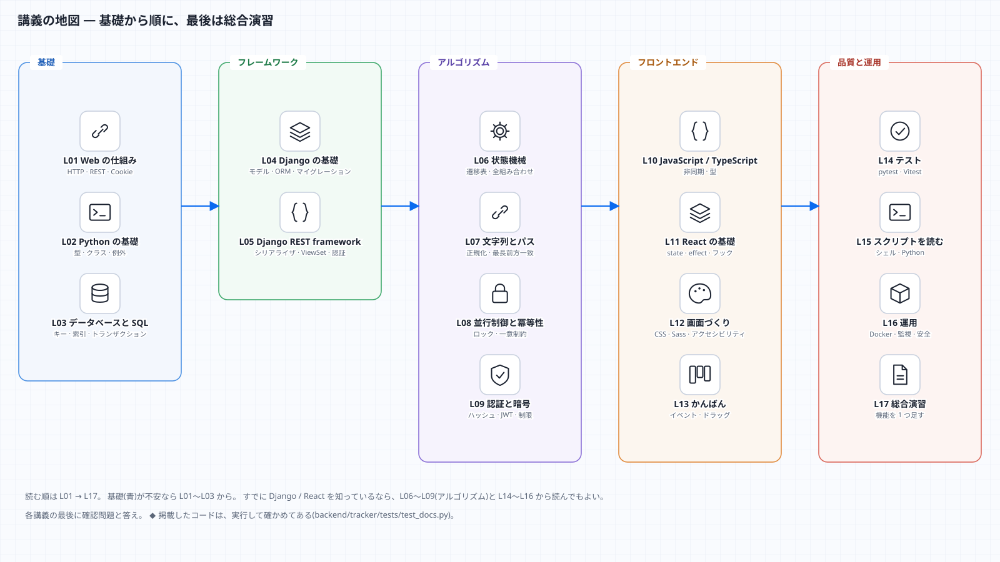

講義資料 ― 基礎から、保守・拡張できるところまで
この資料は、ProductionTracker を題材にした講義です。プログラミングの基礎(Web の仕組み・Python・データベース)から始めて、 フレームワーク(Django・React)、アルゴリズム(状態機械・文字列・並行制御・暗号)、テスト、運用まで、1 つの実物のアプリで順に学びます。 最後には、自分で機能を 1 つ足せるようになることがゴールです。

講義の一覧
| 回 | 題名 | 学ぶこと | 目安 |
|---|---|---|---|
| L00 | はじめに | 学習の進め方・環境づくり・リポジトリの歩き方 | 60 分 |
| L01 | Web の仕組み | HTTP・URL・ステータスコード・JSON・Cookie・REST | 90 分 |
| L02 | Python の基礎 | 値と型・関数・クラス・例外・内包表記・テキストの扱い | 120 分 |
| L03 | データベースと SQL | 表・キー・正規化・SELECT / JOIN・索引・トランザクション | 120 分 |
| L04 | Django の基礎 | MTV・設定・モデルと ORM・マイグレーション・ミドルウェア | 120 分 |
| L05 | Django REST framework | シリアライザ・ViewSet・認証・権限・スロットル・例外処理 | 120 分 |
| L06 | アルゴリズム① 状態機械 | 遷移表・全組み合わせの検証・形式的な考え方 | 90 分 |
| L07 | アルゴリズム② 文字列とパス | 正規化・最長前方一致・計算量・トライ木 | 90 分 |
| L08 | アルゴリズム③ 並行制御と冪等性 | 競合・ロック・一意制約・Idempotency-Key | 90 分 |
| L09 | アルゴリズム④ 認証と暗号 | ハッシュ・CSRF・定数時間比較・JWT・レート制限 | 120 分 |
| L10 | JavaScript / TypeScript の基礎 | 値・関数・非同期(Promise)・fetch・型 | 120 分 |
| L11 | React の基礎 | コンポーネント・state・effect・フック・自作フック | 120 分 |
| L12 | 画面づくり | CSS・Sass・デザイントークン・アクセシビリティ・コントラストの計算 | 120 分 |
| L13 | かんばんを作る | イベント・ドラッグ&ドロップ・先行更新と巻き戻し・キーボード操作 | 90 分 |
| L14 | テストの理論と実践 | pytest・fixture・parametrize・壊れた入力・Vitest | 120 分 |
| L15 | スクリプトを読む | シェル・Python のスクリプト・図の生成 | 90 分 |
| L16 | 運用 | Docker・バックアップ・Cloudflare・Sentry・OWASP | 90 分 |
| L17 | 総合演習 | 機能を 1 つ足す(設計 → テスト → 実装 → 文書) | 半日 |
| 付録 | 用語集 | 本文に出てくる用語の一覧 |
合計で約 30 時間。1 回 = 1〜2 時間で区切れるようにしてある。
各回の形
どの回も、同じ順で進みます。
- この回の目標 と、前提(前の回のどこを使うか)
- 考え方 — まず言葉と図で。「なぜそうするのか」から
- コードを読む — このアプリの実際のコードの抜粋
- 手を動かす — 実行できる小さなコード(結果つき)
- よくある間違い
- 確認問題 と、答え
この資料の約束
- 掲載したコードは、実行して確かめてある。
<!-- test -->の印が付いたコードは、テスト(backend/tracker/tests/test_docs.py)が毎回実行し、 「実行結果」と一致することを確かめる。<!-- excerpt: パス -->の印が付いた抜粋は、そのファイルに本当にある行かを確かめる。 つまり、この資料のコードは、書いてあるとおりに動く。ソースを直して文書が古くなると、テストが落ちる。 - 図は、Markdown だけで読める mermaid 記法と、
docs/diagrams/の SVG の両方で載せている。HTML 版(docs/html/index.html)もある。 - 本文の「このアプリでは」は、ProductionTracker の実際の設計を指す。一般論と区別して読むこと。
- 分からない言葉は 用語集 へ。
読み方のおすすめ
| あなたは | おすすめの順 |
|---|---|
| プログラミングが初めて | L00 → L01 → L02 → L03 → L04 → … を順に。手を動かすを必ず実行する |
| Python は書けるが Web は初めて | L01 → L03 → L04 → L05 → L06〜L09 |
| Django / React は使ったことがある | L06〜L09(アルゴリズム)→ L14(テスト)→ L16(運用)→ L17 |
| 保守・機能追加だけ急ぎたい | 実践ガイド(レシピ)を先に。分からない所で、対応する講義へ戻る |
関連
- 実践ガイド(保守・拡張) — 手順書。レシピ・テスト・トラブルシューティング
- 設計・仕様 — データモデル・API の契約・セキュリティの点検結果